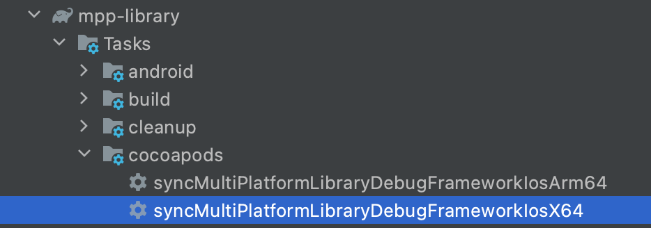
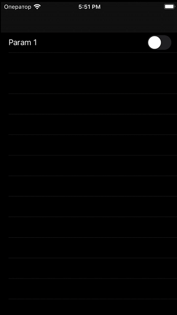

В этой кодлабе мы рассмотрим как реализовать фичи списка по принятому в IceRock стандарту, используя наши библиотеки moko-units и moko-mvvm Основнная особенность нашего подхода - на нативных платформах используются UITableView/UICollectionView и RecyclerView, тогда как вся логика по построению списка этих элементов и наполнению данными реализуется в common коде.
Создаем новый модуль в mpp-library
Для начала, по аналогии с второй кодлабой по пути mpp-library/feature/ создаем директорию для нашего модуля следующей структуры:
.
|____build.gradle.kts
|____src
| |____commonMain
| | |____kotlin
| | | |____org
| | | | |____example
| | | | | |____library
| | | | | | |____feature
| | | | | | | |____listSample
| | | | | | | | |____di
| | | | | | | | | |____ListSampleFactory.kt
| | | | | | | | |____presentation
| | | | | | | | | |____ListSampleViewModel.kt
| |____androidMain
| | |____AndroidManifest.xml
Здесь:
- вложенные директории org/example/library/feature/listSimple должны соответствовать имени пакета ([//TODO: ссылка на "почему так?"]())
- в директории di будет распологаться весь код внешнего создания вьюмодели доступный внешним модулям, сейчас это фабрика вьюмодели
- в директории presentation будет именно ViewModel-логика, то есть сами классы вьюмоделей и возможно что-нибудь вспомогательное для них, доступное только в рамках модуля фичи
Cтартовое состояние файлов такое же как в начале третьей кодлабы, только заменены имена классов и пакетов:
ListSampleViewModel.kt:
package org.example.library.feature.listSample.presentation
import dev.icerock.moko.mvvm.dispatcher.EventsDispatcher
import dev.icerock.moko.mvvm.dispatcher.EventsDispatcherOwner
import dev.icerock.moko.mvvm.viewmodel.ViewModel
class ListSampleViewModel(
override val eventsDispatcher: EventsDispatcher<EventsListener>,
) : ViewModel(), EventsDispatcherOwner<ListSampleViewModel.EventsListener> {
interface EventsListener //пока что пустой интерфейс
}
ListSampleFactory.kt;
package org.example.library.feature.listSample.di
import dev.icerock.moko.mvvm.dispatcher.EventsDispatcher
import org.example.library.feature.listSample.presentation.ListSampleViewModel
class ListSampleFactory {
fun createListViewModel(
eventsDispatcher: EventsDispatcher<ListSampleViewModel.EventsListener>
) = ListSampleViewModel(
eventsDispatcher = eventsDispatcher
)
}
AndroidManifest.xml:
<?xml version="1.0" encoding="utf-8"?>
<manifest package="org.example.library.feature.listSample" />
Теперь нужно указать что наш модуль участвует в gradle-проекте. Добавляем его в settings.gradle в корне проекта:
include(":mpp-library:feature:auth")
include(":mpp-library:feature:listSample") //добавляем наш новый модуль
Чтобы ссылаться на этот модуль необходимо завести его в структуре зависимостей в файле ./buildSrc/src/main/kotlin/Deps.kt. Как и авторизацию, добавим его в список фичей:
object Modules {
object Feature {
val auth = MultiPlatformModule(
name = ":mpp-library:feature:auth",
exported = true
)
//добавляем новым полем в класс
val listSample = MultiPlatformModule(
name = ":mpp-library:feature:listSample",
exported = true
)
}
}
флаг exported указывает что при сборке этот модуль попадет в платформенный фреймворк и будет доступен со стороны iOS, можно не указывать для модулей код которых не будет вызываться непосредственно с нативной части приложения
Теперь можно сослаться на модуль фичи из основного в ./mpp-library/build.gradle.kts:
val mppModules = listOf(
Deps.Modules.Feature.auth,
Deps.Modules.Feature.listSample //Добавляем наш модуль
)
Осталось выполнить синхронизацию gradle, плагин для студии предлагает сделать это после каждого изменения gradle-файлов: 
В итоге наш модуль доступен в основном коде mpp-library, теперь как и для фичи авторизации реализуем фабрику вьюмодели в ./mpp-library/SharedFactory.kt:
...
import org.example.library.feature.auth.di.AuthFactory
import org.example.library.feature.listSample.di.ListSampleFactory //можем добавить импорт самостоятельно, но IDE сама предложит это сделать при упоминании в коде классов из этого модуля
...
// init factories here
val authFactory: AuthFactory by lazy {
AuthFactory()
}
// listSample factory setup
val listSampleFactory: ListSampleFactory by lazy {
ListSampleFactory()
}
init {
...
На этом базовый каркас заготовки фичи со стороны общего кода готов
Создаем новый UIViewController на iOS, связываем его с ViewModel
Выполняем нужную нам таску гредла из mpp-library/cocoapods/sync (в примере собиралась отладочная версия на симулятор): 
Открываем XCode, в проекте по пути ./ios-app/src/Features создаем директорию для нашей фичи следующей структуры:
.
|____ListSample
| |____Coordinator
| | |____ListSampleCoordinator.swift
| |____ViewController
| | |____ListSampleViewController.xib
| | |____ListSampleViewController.swift
Пару файлов для контроллера рекомендуется создавать через XCode в диалоге New File -> Cocoa Touch class: 
и выбрав в диалоге наследование от UIViewController и отметку о создании связанного XIB файла: 
Класс контроллера должен наследоваться от BaseViewController с указанием класса вьюмодели:
import UIKit
import MultiPlatformLibrary
class ListSampleViewController: BaseViewController<ListSampleViewModel> {
override func bindViewModel(_ viewModel: ListSampleViewModel) {
super.bindViewModel(viewModel)
print("ListSample: ready to bind")
}
}
*В generic-классе BaseViewController заложена вспомогательная логика по очистке вьюмодели, событиях клавиатуры и многого другого, может пополняться полезными функциями от проекта к проекту*
В файле ListSampleCoordinator создаем контроллер, вьюмодель и показываем контроллер как корневой у текущего окна:
import UIKit
import MultiPlatformLibrary
class ListSampleCoordinator: BaseCoordinator, ListSampleViewModelEventsListener {
override func start() {
let viewController = ListSampleViewController()
let viewModel = self.factory.listSampleFactory.createListViewModel(
eventsDispatcher: EventsDispatcher(listener: self))
viewController.bindViewModel(viewModel)
beginInNewNavigation(viewController)
}
}
//TODO: Оставить ссылку где можно подробнее почитать про координаторы
Теперь осталось вызывать координатор фичи с предыдущего экрана или корня приложения. Вызовем из корня, для чего заменим метод start() в AppCoordinator:
class AppCoordinator: BaseCoordinator {
override func start() {
addDependency(
ListSampleCoordinator(window: self.window, factory: self.factory),
completion: nil
).start()
}
}
Теперь после запуска приложения будет пустой экран и текст "ListSample: ready to bind" в консоли
Создаем новый фрагемент/активность(?) на Android, связываем его с ViewModel
//TODO: Дополнить андроидную часть
Для примера реализуем список настроек состоящих из названия и переключателя вкл/выкл
Основная идея moko-units
С развитием KMM нужно было как-то перенести на уровень ViewModel управление списками, сделать его настройку простой и стандартной а реализацию переиспользуемой хотя бы между фичами одного проекта. В итоге пришли к следующей схеме:
- На стороне ViewModel объявляем какие элементы списка нужны будут нашей ( интерфейс *UnittFactory, только тип элемента и данные)
- На стороне платформы реализуем интерфейс *UnittFactory и предоставляем конструкторы этих элементов
- На стороне ViewModel руководствуясь бизнес логикой генерируем массив элементов списка
- На нативной стороне по предоставленному массиву заполянем UI
Состав moko-units
Если описывать кратко, то возможности самой moko-units следующии:
- Со стороны common-кода объявлены два пустых expect-интерфейса CollectionUnitItem и TableUnitItem
- Со стороны iosMain/kotlin кода есть actual-объявления этих интерфейсов с методами и параметрами необходимыми для создания ячеек коллекций и строк таблиц (
reusableIdentifier), регистрации в таблице/коллекции (fun register(...)) , привязки *UnitItem к ячейкам/строкам (fun bind()) и сравнения между собой (val itemId: Long) - //TODO: Про андроид непонятно, здесь кажется без expect/actual, все платформенное
- Со стороны iosMain/kotlin есть реализации источников данных для таблиц/коллекции, умеющих работать с экземплярами этих интерфейсов.
- Со стороны iosMain/swift есть вспомогательные протоколы и расширения, позволяющие реализовать создание *UnitItem уже для конкретного пользоввательского класса ячейки и создать источник данных для нее
- //TODO: Что со стороны андроида?
Верстаем iOS
В ListViewController.xib добавляем UITableView на весь экран: 
и выставляем outlet для нее в ListViewController.swift:
@IBOutlet private weak var sampleTableView: UITableView!
В группе фичи создаем подгруппу Cells и по аналогии с контроллером добавляем в нее новый Cocoa Touch Class отнаследованный от UITableViewCell

Добавляем в xib ячейки необходимые элементы, их outlet'ы в класс и настраиваем действие на valueChanged: 
import UIKit
class SampleTableViewCell: UITableViewCell {
@IBOutlet var someLabel: UILabel!
@IBOutlet var someSwitch: UISwitch!
@IBAction func onSwitchValueChanged(_ sender: UISwitch) {
//TODO: Implement action
}
}
На этом верстка готова
Верстаем Android
//TODO: Сделать по аналогии
Добавляем фабрику юнитов в common-коде
Для начала подключаем библитеку moko-units в зависимости нашей фичи. mpp-library/feature/lisSample/build.gradle.kts:
...
commonMainImplementation(Deps.Libs.MultiPlatform.mokoResources.common)
commonMainImplementation(Deps.Libs.MultiPlatform.mokoUnits.common)
}
и выполняем синхронизацию gradle-проекта
Далее нужно по пути listSample/src/commonMain/org.example.library.feature.listSample/di добавить файл ListSampleUnitFactory.kt с интерфейсом для фабрики юнитов и перечислить в методе создания юнита все что нам потребуется для настройки строки в списке:
package org.example.library.feature.listSample.di
import dev.icerock.moko.units.TableUnitItem
interface ListSampleUnitFactory {
fun createSettingsUnit(
id: Int, //нужен будет для сравнения строк списка между собой
name: String, //прямо присвоится в поле
boolValue: Boolean, //положение переключателя
onValueChanged: ((Boolean) -> Unit) //лямбду которую надо вызвать при переключении
): TableUnitItem
}
Теперь добавляем этот интерфейс как обязательный параметр в конструкторе ListSampleViewModel:
class ListSampleViewModel(
override val eventsDispatcher: EventsDispatcher<EventsListener>,
private val unitFactory: ListSampleUnitFactory
) : ViewModel(), EventsDispatcherOwner<ListSampleViewModel.EventsListener> {
и соответственно в параметры метода ListSampleFactory.createListViewModel:
class ListSampleFactory {
fun createListViewModel(
eventsDispatcher: EventsDispatcher<ListSampleViewModel.EventsListener>,
unitFactory: ListSampleUnitFactory
) = ListSampleViewModel(
eventsDispatcher = eventsDispatcher,
unitFactory = unitFactory
)
}
Теперь после пересборки common-части со стороны платформ нельзя будет создать объект вьюмодели не передав ему реализацию фабрики юнитов а в классе ListSampleViewModel можно завести список моделей и список соответствующих им юнитов:
...
) : ViewModel(), EventsDispatcherOwner<ListSampleViewModel.EventsListener> {
//Объявляем класс для элемента настроек, по необходимости можно вынести его в отдельный файл/модуль
data class SettingsItem(
val id: Int,
val name: String,
val boolValue: Boolean
)
//Создаем тестовый список элементов
private val _settingsList: List<SettingsItem> = listOf(
SettingsItem(id = 1, name = "Param 1", boolValue = true),
SettingsItem(id = 2, name = "Param 2", boolValue = false),
SettingsItem(id = 3, name = "Param 3", boolValue = false),
SettingsItem(id = 4, name = "Param 4", boolValue = true)
)
//Транслируем их в юниты
val settingUnitsList: List<TableUnitItem> = _settingsList.map {
this.mapSettingsToUnit(it)
}
//Функция для маппинга
fun mapSettingsToUnit(settings: SettingsItem): TableUnitItem {
return unitFactory.createSettingsUnit(
id = settings.id,
name = settings.name,
boolValue = settings.boolValue,
onValueChanged = { newValue ->
println("cell: ${settings.id} toggled to ${newValue}")
}
)
}
На это со стороны common-кода самый простой вариант статичного списка готов, позже усложним его
Реализуем фабрику юнитов на стороне iOS
Прежде всего нужно будет в классе ячейки импортировать MultiplatformLibraryUnits и реализовать протокол Fillable (для ячеек удовлетворяющих этому протоколу заготовлены готовые функции создания юнитов):
import UIKit
import MultiPlatformLibraryUnits
class SampleTableViewCell: UITableViewCell, Fillable {
//Протокол требует определить тип данных для настройки ячейки
typealias DataType = CellModel
struct CellModel {
let title: String
let switchValue: Bool
let switchAction: ((Bool) -> Void)
}
//Для сохранения действия локально
private var switchAction: ((Bool) -> Void)?
@IBOutlet var someLabel: UILabel!
@IBOutlet var someSwitch: UISwitch!
@IBAction func onSwitchValueChanged(_ sender: UISwitch) {
switchAction?(sender.isOn)
}
//Протокол требует определить метод заполнения ячейки по типу данных
func fill(_ data: CellModel) {
self.switchAction = data.switchAction
self.someLabel.text = data.title
self.someSwitch.setOn(data.switchValue, animated: true)
}
}
Теперь можно реализовать саму фабрику юнитов.
Рядом с файлами ячеек (директория Cells) добавляем реализацию фабрики юнитов ListSampleUnitFactoryImpl.swift:
import MultiPlatformLibrary
import MultiPlatformLibraryUnits
class ListSampleUnitFactoryImpl: ListSampleUnitFactory {
func createSettingsUnit(
id: Int32,
name: String,
boolValue: Bool,
onValueChanged: @escaping (KotlinBoolean) -> Void) -> TableUnitItem {
//Прокидываем параметры в ячейку и связываем лямбды
return UITableViewCellUnit<SampleTableViewCell>(
data: SampleTableViewCell.DataType(
title: name,
switchValue: boolValue,
switchAction: { newValue in
onValueChanged(KotlinBoolean(value: newValue))
}),
itemId: Int64(id))
}
}
Здесь используется вспомогательный класс UITableViewCellUnit из moko-units, которому в качестве generic-параметра нужен класс Fillable-ячейки
Теперь в классе координаторе передаем в конструктор вьюмодели экземпляр фабрики юнитов:
let viewModel = self.factory.listSampleFactory.createListViewModel(
eventsDispatcher: EventsDispatcher(listener: self),
unitFactory: ListSampleUnitFactoryImpl()
)
И в классе контроллера добавляем источник данных для таблицы и задаем ему список юнитов:
import UIKit
import MultiPlatformLibrary
import MultiPlatformLibraryUnits
class ListSampleViewController: BaseViewController<ListSampleViewModel> {
@IBOutlet private weak var sampleTableView: UITableView!
//TableUnitsSource - протокол которому можно дать массив из [TableUnitItem], для него есть готовые реализации в moko-units
private var tableDataSource: TableUnitsSource?
override func bindViewModel(_ viewModel: ListSampleViewModel) {
super.bindViewModel(viewModel)
//Создаем дефолтный вариант источника данных
//(вызывает UITableView.reload для обновления ячеек)
tableDataSource = TableUnitsSourceKt.default(for: sampleTableView)
//Присваиваем элементы списка
tableDataSource?.unitItems = viewModel.settingUnitsList
print("ListSample: ready to bind")
}
}
Теперь при запуске приложения увидим экран со списком настроек: 
и сообщения в логе при их переключении:
cell: 3 toggled to true
cell: 2 toggled to true
cell: 1 toggled to false
cell: 4 toggled to false
Реализуем фабрику юнитов на стороне Android
Добавляем обновление списка
Теперь сделаем наш список элементов динамическим, для этого сначала заменим тип свойств в ListSampleViewModel на MutableLiveData и LiveData:
//Создаем тестовый список элементов
private val _settingsData: MutableLiveData<List<SettingsItem>> = MutableLiveData(
listOf(
SettingsItem(id = 1, name = "Param 1", boolValue = false)
)
)
//Транслируем их в юниты
val settingUnitsData: LiveData<List<TableUnitItem>> = _settingsData
.readOnly()
.map { settings ->
settings.map { this.mapSettingsToUnit(it) }
}
И добавил некоторый интерактив на переключение настроек (здесь в примере выключение настройки убирает все последующие за ней из списка)
...
onValueChanged = { newValue ->
onSettingChanges(settings, newValue)
}
)
}
//Оставляем только первую серию включенных настроек и добавляем в конец следующий выключенный пункт
private fun onSettingChanges(changedSetting: SettingsItem, newValue: Boolean) {
val newSettings = _settingsData.value.map { currentSetting ->
if (currentSetting.id == changedSetting.id) {
currentSetting.copy(boolValue = newValue)
} else {
currentSetting
}
}
val trueSettings = newSettings.takeWhile { it.boolValue }
val lastSettingId = (trueSettings.lastOrNull()?.id ?: 0) + 1
val resultSettings = trueSettings.plusElement(
SettingsItem(
lastSettingId,
"Param ${lastSettingId}",
boolValue = false)
)
_settingsData.value = resultSettings
}
После пересборки мультиплатформы надо будет со стороны iOS в контроллере поменять передачу юнитов в источник данных:
//Присваиваем элементы списка
viewModel.settingUnitsData.addObserver { [weak tableDataSource] data in
tableDataSource?.unitItems = data as? [TableUnitItem]
}
Вот такой результат после запуска: 
Для анимированного перестроения элементов можно подключить pod:
pod 'MultiPlatformLibraryUnits/Differ',
:git => 'https://github.com/icerockdev/moko-units.git', :tag => 'release/0.5.1'
И поменять конструктор источника данных:
tableDataSource = TableUnitsSourceKt.diffable(for: sampleTableView)